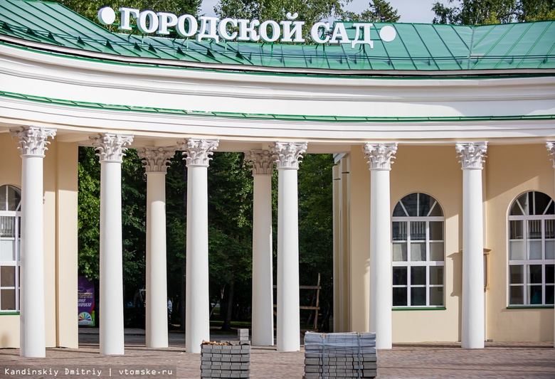

Компания «Томскремстройпроект» завершила строительство арки на входе в Городской сад. Сейчас специалисты завершают укладку тротуарной плитки у объекта.
Напомним, арка у Горсада в Томске была снесена в сентябре 2016 года. В мэрии говорили, что решение о сносе было принято из-за аварийного состояния сооружения. Планировалось, что арку восстановят в прежнем виде силами инвестора «Газпром трансгаз Томск» к лету 2017 года, однако работы отложили. Из-за сноса арки СК возбудил уголовное дело по статье «халатность», однако прекратил его, так как в действиях мэрии не нашли нарушений.
В 2018 году из городского бюджета выделили 300 тысяч рублей на разработку проектно-сметной документации для восстановления арки в историческом виде. К работам компания «Томскремстройпроект» приступила осенью 2019 года.
Как сообщил vtomske.ru мастер строительных работ «Томскремстройпроект» Анатолий Нечипорук, работы шли с сентября прошлого года до настоящего времени.
«Строительство мы начали в сентябре. До конца 2019 года выполнили разработку грунта, устройство фундамента, колонн, возведение стен, были устроены лестничные марши, кровля. В январе строительство пришлось приостановить из-за неблагоприятных погодных условий для выполнения отделочных работ. Продолжили весной», — рассказал Анатолий Нечипорук.
В весенние месяцы, в июне и начале июля специалисты произвели устройство системы электроснабжения, монтаж отопления, внутренние отделочные работы, фасадные работы.
«В основании здания находится монолитная плита, выполнена укладка стен из кирпича, сделаны монолитные железобетонные межэтажные и чердачное перекрытия, стены были отштукатурены, зашпаклеваны и покрашены. Также обустроены лестничные марши на основе металлоконструкций, облицованы плиткой. В обоих корпусах по два этажа, в каждом из них есть своя котельная, зимой помещения будут отапливаться. Колонны были сделаны из бетона — мы делали металлический каркас и заливали, а затем уже готовые колонны кирпичной кладкой выводили до кровли. На колоннах сделаны архитектурные ордера. Крыша сделана из дерева», — рассказал Анатолий Нечипорук.
Фасад сооружения полностью готов. По кругу специалисты сделали тягу — архитектурный декоративный элемент в виде горизонтального «пояса» или выступа на здании.
«Все работы сделаны как внутри, так и снаружи, все готово. Сделали по проекту, без каких-либо отклонений, в первозданном виде. Со сложностями никакими не столкнулись, только сроки сжимали», — сказал Нечипорук.
В настоящее время специалисты выполняют благоустройство прилегающей к арке территории — укладывают новую тротуарную плитку. «Полностью все будет готово до 10 июля», — добавил специалист.
Как сообщили в мэрии, в здании арки разместится Туристско-информационный центр.
